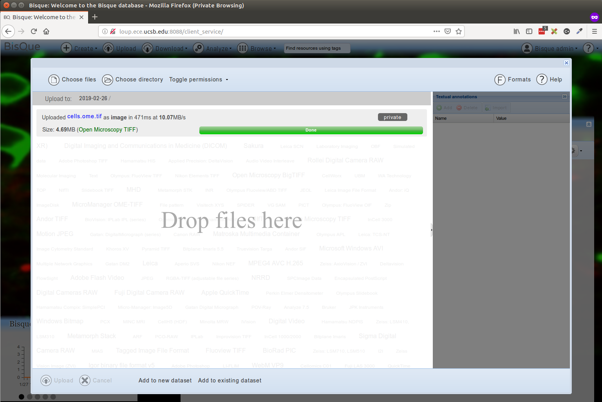
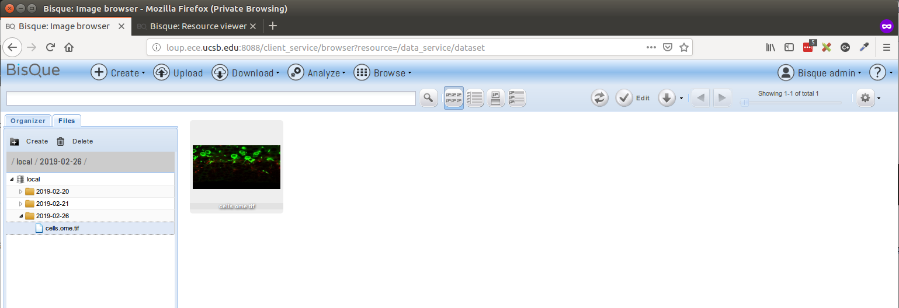
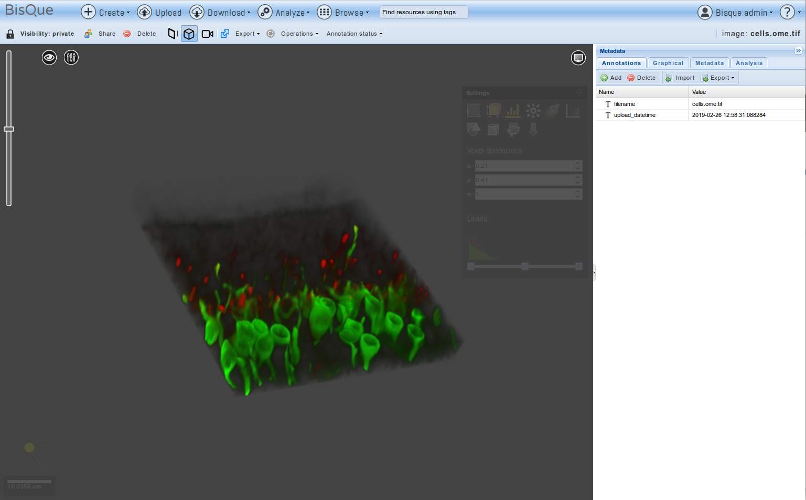

Bisque Development Environment Setup Instructions¶
This guide details the installation of a bisque server on an Ubuntu 16.04 LTS environment.
Project Source
- Github: https://github.com/UCSB-VRL/bisque
Developer Installation
- Bisque Github Pages: https://ucsb-vrl.github.io/bisque-dev/guides/bisque
Reference
Setup for Ubuntu 16.04¶
Pre-requisites¶
sudo apt-get install -y python python-dev python-virtualenv python-numpy python-scipy sudo apt-get install -y libxml2-dev libxslt1-dev libhdf5-dev sudo apt-get install -y libmysqlclient-dev libpq-dev mercurial git cmake sudo apt-get install -y postgresql postgresql-client libsqlite3-dev sudo apt-get install -y python-paver python-setuptools sudo apt-get install -y graphviz libgraphviz-dev pkg-config sudo apt-get install -y openslide-tools python-openslide sudo apt-get install -y libfftw3-dev libbz2-dev libz-dev sudo apt-get install -y liblcms2-dev libtiff-dev libpng-dev sudo apt-get install -y libgdcm2.6 libopenslide-dev libopenslide0
Install Openjpeg
git clone https://github.com/uclouvain/openjpeg cd openjpeg && mkdir build && cd build cmake .. -DCMAKE_BUILD_TYPE=Release sudo make -j4 install sudo ldconfig
Install BioImageConvert
- BioImageConvert Source Repository
- Prebuilt Binaries Repository
- Setup for pre-built binaries (below)
# Ubuntu 18 version wget https://bitbucket.org/dimin/bioimageconvert/downloads/imgcnv_ubuntu18_2.5.0.tar.gz # Ubuntu 16 version wget https://bitbucket.org/dimin/bioimageconvert/downloads/imgcnv_ubuntu16_2.4.3.tar.gz tar -xvzf imgcnv_ubuntu16_2.4.3.tar.gz sudo cp imgcnv_ubuntu16_2.4.3/imgcnv /usr/local/bin/ sudo cp imgcnv_ubuntu16_2.4.3/libimgcnv.so.2.4.3 /usr/local/lib/ sudo ln -s /usr/local/lib/libimgcnv.so.2.4.3 /usr/local/lib/libimgcnv.so.2.4 sudo ln -s /usr/local/lib/libimgcnv.so.2.4 /usr/local/lib/libimgcnv.so.2 sudo ln -s /usr/local/lib/libimgcnv.so.2 /usr/local/lib/libimgcnv.so sudo ldconfig
Alternately, Compile by source and Install (You are on your own here)
hg clone --insecure http://biodev.ece.ucsb.edu/hg/imgcnv cd imgcnv && make -j6 sudo make install
A. Clone the repository and Prepare Virtual Environment¶
We will clone the stable repository and work inside a python virtual environment for setup requirements.
git clone https://github.com/UCSB-VRL/bisque.git bisque-stable
- Its always a good practive to use a virtualenv to develop projects
sudo pip install virtualenvwrapper
- Edit ~/.bashrc and export the following variables
- In case of issues around virtualenvwrapper make sure the paths in the variables below exist
# virtualenv and virtualenvwrapper export PATH=/usr/local/bin:$PATH export VIRTUALENVWRAPPER_PYTHON=/usr/bin/python export VIRTUALENVWRAPPER_VIRTUALENV=/usr/local/bin/virtualenv source /usr/local/bin/virtualenvwrapper.sh
- Now load this using "source ~/.bashrc"
- Create a virtual envrionment "mkvirtualenv -p /usr/bin/python2 bqdev"
- Change environment "workon bqdev"
Deprecated Bootstrap Installer (Do Not Use this Script)¶
$ mkdir bisque && cd bisque $ wget http://biodev.ece.ucsb.edu/projects/bisquik/export/tip/bisque-stable/contrib/bootstrap/bisque-bootstrap.py $ python bisque-bootstrap.py bqenv # Activate Virtualenv bisque$ source bqenv/bin/activate
- Now Install requirements
pip install -i https://biodev.ece.ucsb.edu/py/bisque/xenial/+simple/ -r requirements.txt Alternate Index Url for Development: https://biodev.ece.ucsb.edu/py/bisque/dev/+simple Index Url Debian Stretch: https://biodev.ece.ucsb.edu/py/bisque/stretch/+simple/ Index Url Ubuntu xenial: https://biodev.ece.ucsb.edu/py/bisque/xenial/+simple/
- Fix the requirements.txt (Only if the installation fails)
#Fix the requirements.txt file using sed -i 's/.*psycopg2==2.6.1.*/psycopg2==2.7.1./' requirements.txt psycopg2==2.7.1 Minimatic==1.0 Paste==1.7.5.1 httplib2==0.7.3 #tgext.registration==0.1dev # Install separately since packages may be deprecated in PyPi easy_install http://biodev.ece.ucsb.edu/binaries/depot/tgext.registration2/tgext.registration2-0.5.2.tar.gz
B. Configure Bisque Environment¶
- Run the Paver setup
$ paver setup
- Expected paver log tail
Installing collected packages: bqengine Running setup.py develop for bqengine Successfully installed bqengine Now run: bq-admin setup
- Run the bq-admin standalone setup
$ bq-admin setup
- Expected bq-admin setup log tail (also observe the various inputs in the log for this setup)
(bqdev) rahul@loup:~/repository/github/bisque$ bq-admin setup
INFO:root:Generating grammar tables from /usr/lib/python2.7/lib2to3/Grammar.txt
INFO:root:Generating grammar tables from /usr/lib/python2.7/lib2to3/PatternGrammar.txt
Developer installation
DIRS: {'bin': '/home/rahul/.virtualenvs/bqdev/bin', 'run': '.', 'share': '.', 'plugins': './plugins', 'packages': '/home/rahul/.virtualenvs/bqdev/lib/python2.7/site-packages', 'data': './data', 'virtualenv': '/home/rahul/.virtualenvs/bqdev', 'default': './config-defaults', 'jslocation': 'bqcore', 'modules': './modules', 'depot': './external', 'config': './config', 'public': './public'}
INFO:root:Generating grammar tables from /usr/lib/python2.7/lib2to3/Grammar.txt
INFO:root:Generating grammar tables from /usr/lib/python2.7/lib2to3/PatternGrammar.txt
Developer installation
DIRS: {'bin': '/home/rahul/.virtualenvs/bqdev/bin', 'run': '.', 'share': '.', 'plugins': './plugins', 'packages': '/home/rahul/.virtualenvs/bqdev/lib/python2.7/site-packages', 'data': './data', 'virtualenv': '/home/rahul/.virtualenvs/bqdev', 'default': './config-defaults', 'jslocation': 'bqcore', 'modules': './modules', 'depot': './external', 'config': './config', 'public': './public'}
This is the main installer for Bisque
The system will initialize and be ready for use after a succesfull
setup has completed.
Several questions must be answered to complete the install. Each
question is presented with default in brackets []. Pressing
<enter> means that you are accepting the default value. You may
request more information by responding with single '?' and then <enter>.
For example:
What is postal abbreviation of Alaska [AK]?
The default answer is AK and is chosen by simply entering <enter>
Beginning install of ['bisque', 'engine'] with ['server']
CALLING <function install_external_binaries at 0x7f9533ffac08>
Fetch external binary files from Bisque development server [Y]? Y
Matched section Linux-64bit-*
extjs.zip found locally
bioformats-pack.zip found locally
libmbgl-linux-64-large.a found locally
feature_extractors.zip found locally
ImarisConvert.tar.gz found locally
opencv-2.4.6.zip found locally
CALLING <function install_dependencies at 0x7f9533ffad70>
2.4.3
Found imgcnv version 2.4.3
Imgcnv is installed and no-precompiled version exists. Using installed version
ImarisConvert is up to date
No pre-compiled version of openslide exists for your system
Please visit our mailing list https://groups.google.com/forum/#!forum/bisque-bioimage for help
Bioformats is up to date
CALLING <function install_features at 0x7f9533ffb050>
Install feature extractors (Feature Server) [Y]?
Unpacking ./external/feature_extractors.zip into ./bqfeature/bq
Install source code for feature extractors [N]?
To enable the feature service to read OME-bigtiff for feature extraction install
libtiff4
For Debian use the command apt-get install libtiff5-dev
Install OpenCV-2.4.6 [Y]?
Extracted opencv-2.4.6/python2.7/cv.py -> /home/rahul/.virtualenvs/bqdev/lib/python2.7/site-packages/cv.py
Extracted opencv-2.4.6/python2.7/cv2.so -> /home/rahul/.virtualenvs/bqdev/lib/python2.7/site-packages/cv2.so
CALLING <function install_plugins at 0x7f9533ff9b18>
Try to install plugins [Y]?
INFO 'svn'not found: cannot fetch source repositories with svn
INSTALL PLGINS ['./plugins']
Checking ./plugins for modules
CALLING <function install_public_static at 0x7f9533ffa848>
Deploy all static resources to public directory [Y]?
Creating ./public
INFO:bq.image_service.server:Available converters: openslide (1.1.1), imgcnv (2.4.3), ImarisConvert (8.0.2), bioformats (5.1.1)
Problem loading registration = bq.registration.controllers.registration_service: 'User'
Generating packaged JS and CSS files
INFO:minimatic:Combined -> ./public/core/css/all_css.css:
INFO:minimatic:Combined -> ./public/core/js/all_js.js:
CALLING <function install_server_defaults at 0x7f9533ffa410>
Server config
Top level site variables are:
bisque.admin_email=YourEmail@YourOrganization
bisque.admin_id=admin
bisque.organization=Your Organization
bisque.paths.root=.
bisque.server=http://0.0.0.0:8088
bisque.title=Image Repository
Change a site variable [N]? Y
Enter the root URL of the server [http://0.0.0.0:8088]? http://loup.ece.ucsb.edu:8080
Your real name administrator account []?
A login ID for the administrator account [admin]?
An email for the administrator [YourEmail@YourOrganization]?
A small organization title for the main page [Your Organization]?
The main title for the web page header [Image Repository]?
Installation Directory [.]?
Do you want to create new server configuations [Y]?
{'backend': 'paster',
'e1.bisque.has_database': 'false',
'e1.bisque.static_files': 'false',
'e1.services_enabled': 'engine_service',
'e1.url': 'http://0.0.0.0:27000',
'h1.bisque.static_files': 'true',
'h1.services_disabled': '',
'h1.services_enabled': '',
'h1.url': 'http://0.0.0.0:8088',
'servers': 'h1'}
The server agent for bisque [paster]?
list of server entries to be configured [h1]?
Install (update) paster configs (application server and configs) [Y]?
PARAMS {'h1.bisque.static_files': 'true', 'h1.services_enabled': '', 'e1.bisque.has_database': 'false', 'h1.url': 'http://0.0.0.0:8088', 'servers': 'h1', 'h1.services_disabled': '', 'e1.url': 'http://0.0.0.0:27000', 'e1.bisque.static_files': 'false', 'e1.services_enabled': 'engine_service', 'backend': 'paster'}
h1: the url of the server [http://0.0.0.0:8088]? http://loup.ece.ucsb.edu:8080
h1: Services enabled []?
h1: Services disabled []?
Created paster config: ./config/h1_paster.cfg
CALLING <function install_mail at 0x7f9533ffa758>
Enable mail delivery [Y]? N
CALLING <function install_secrets at 0x7f9533ffa8c0>
Encrypt cookies with secret phrase [CEMWOJ65]?
CALLING <function install_database at 0x7f9533ff9578>
A database URI [sqlite:///data/bisque.db]?
Trying to import driver sqlite3...
Driver successfully imported.
Create and initialize database [Y]?
A database URI [sqlite:///data/bisque.db]?
Checking whether database "data/bisque.db" already exists...
Yes, it exists.
Upgrading database version (alembic)
INFO [alembic.migration] Context impl SQLiteImpl.
INFO [alembic.migration] Will assume non-transactional DDL.
CALLING <function install_preferences at 0x7f9533ffa7d0>
Initialize Preferences [Y]?
Force initialization [N]?
INFO:bq.config:DATABASE sqlite:///data/bisque.db
INFO:bq.config:SQLLite special handling NullPool timoout
INFO:bq.image_service.server:Available converters: openslide (1.1.1), imgcnv (2.4.3), ImarisConvert (8.0.2), bioformats (5.1.1)
INFO:bq.blobs.mounts:Loaded drivers OrderedDict([('local', {'top': 'file://$datadir/imagedir/', 'mounturl': 'file://$datadir/imagedir/$user/'})])
WARNING:bq.blobs.mounts:SQLITE does not support subtransactions: some mount service operations will fail
INFO:bq.blobs.plugins:Resource plugins: ['(bisque_pipeline, bq)', '(cellprofiler_pipeline, cppipe)', '(cellprofiler_pipeline, cp)', '(dream3d_pipeline, json)', '(imagej_pipeline, ijm)', '(text, asc)', '(text, ascii)', '(text, zw)', '(text, hz)', '(text, txt)', '(text, utxt)', '(text, utf8)', '(table, csv)', '(table, hdf)', '(table, hdf5)', '(table, h5)', '(table, he5)', '(table, h5ebsd)', '(table, dream3d)', '(table, csv)', '(table, xls)', '(table, xlsx)']
WARNING:bq.service:Following service were not found: set(['mnt'])
/home/rahul/.virtualenvs/bqdev/local/lib/python2.7/site-packages/sqlalchemy/sql/sqltypes.py:226: SAWarning: Unicode type received non-unicode bind param value 'system'. (this warning may be suppressed after 10 occurrences)
(util.ellipses_string(value),))
NO ACTION: System object initialized at <system created="2019-02-04T10:51:57.823907" name="system" owner="http://localhost/data_service/00-2jimYQLLjB3yy3HuTwQM5c" permission="published" resource_uniq="00-UAZfWJYjDKp4yhabV3PP7S" ts="2019-02-04T10:51:57.823907" uri="http://localhost/data_service/00-UAZfWJYjDKp4yhabV3PP7S"/>
Problem initializing preferences.. please use bq-admin preferences
Initialize your database with:
$ bq-admin setup createdb
You can start bisque with:
$ bq-admin server start
then point your browser to:
http://loup.ece.ucsb.edu:8080
If you need to shutdown the servers, then use:
$ bq-admin server stop
You can login as admin and change the default password.
Send Installation/Registration report [Y]? N
(bqdev) rahul@loup:~/repository/github/bisque$
- Add "config/runtime-bisque.cfg" for module configuration and docker image registry
- Edit and add run config from config-defaults/runtime-bisque.defaults to config/runtime-bisque.cfg
- Here are some local changes but requires docker to be setup
runtime.platforms = command runtime.staging_base = staging/ [docker] docker.enabled = true # A hub where to push containers to docker.hub = biodev.ece.ucsb.edu:5000
C. Run Bisque Server¶
- Start/Stop the server
$ bq-admin server start
$ bq-admin server stop
- Overview of Installation (Just for review)
workon bqdev
paver setup [server|engine]
bq-admin setup [server|engine]
bq-admin deploy public
Open in browser

D. Upload Dataset¶
-
Upload an image file from your local directory to Bisque 
-
Browse uploaded dataset in the file explorer
- Select Browse menu item in the navigation bar and click on dataset
- Thereafter click on the files tab and click through the local database folder in the left document tree section.

- Select the uploaded file to view
- This visualization is by default 2D in nature.
- The various slices can be stepped through or played using the scroll bar on righ bottom of the image view area

- A 3D visualization can be explored by clicking the cube icon towards the right of share and delete icons on the tool bar right below the navigation bar.

E. Module¶
Load/Install Module packages and dependencies¶
Lets take module/MetaData code as an example.
- Ensure ~/bisque/config/runtime-bisque.cfg has the configuration as below
runtime.staging_base = staging/ docker.hub = biodev.ece.ucsb.edu:5000
- Make sure the runtime-module.cfg is as per below
module_enabled = True runtime.platforms=command [command] environments = Staged executable = python MetaData.py files = MetaData.py
- Now build/compile this module
cd ~/bisque/modules/MetaData python setup.py
Open up the Bisque web interface at http://loup.ece.ucsb.edu:8088
- Login using admin:admin
- Update the email address in the users context menu item (This is important)
- Open Module Manager from the admin user context menu
- Paste the following URL in the Module->Engine Module
http://loup.ece.ucsb.edu:8088/engine_service/
- List of engine modules could be seen
- Drag-n-Drop say MetaData module from the list to the left window and close the window


Run Module¶
-
Refresh the page, go to Analyse and select Metadata module there

-
Select a single image for test

-
Execute Run command and observe the updates in the results section

F. Debug Module¶
- Every module run will generate a model execution identifier to track this execution. You can observe this after clicking the run command and you have a result. It could be success or fail in the Results section
http://loup.ece.ucsb.edu:8088/module_service/MetaData/?wpublic=1#mex=http://loup.ece.ucsb.edu:8088/module_service/mex/00-ZmuAoE43wTxByycmaCnvBF
- The mex identifier (==MEX_ID=00-ZmuAoE43wTxByycmaCnvBF==) observed from URL can be used to locate this execution code & resulting logs in the staging folders
- change directory to this staging folder and observe the files there
cd ~/bisque/staging/00-ZmuAoE43wTxByycmaCnvBF rahul@loup:~/bisque/staging/00-ZmuAoE43wTxByycmaCnvBF$ tree . ├── MetaData.log ├── MetaData.py ├── python.log └── state00-ZmuAoE43wTxByycmaCnvBF.bq 0 directories, 4 files
- Here we can see that the MetaData.log and python.log files are generated
- In case of issues these are the log files that we need to look into for detailed error reporting
- main log file is the bisque_8088.log file at the ~/bisque home directory
13:45:11,996 INFO [bq.root] [admin] POST http://loup.ece.ucsb.edu:8088/module_service/mex/00-ZmuAoE43wTxByycmaCnvBF?view=short
13:45:12,001 INFO [bq.module_server] MEX APPEND http://loup.ece.ucsb.edu:8088/module_service/mex/00-ZmuAoE43wTxByycmaCnvBF?view=short
13:45:12,205 INFO [bq.engine_service.command_run] SUCCESS Command python MetaData.py http://loup.ece.ucsb.edu:8088/data_service/00-6dpWgEAue2iz8YZcKPHejh http://loup.ece.ucsb.edu:8088/module_service/mex/00-ZmuAoE43wTxByycmaCnvBF admin:00-ZmuAoE43wTxByycmaCnvBF with 0
13:45:12,206 INFO [bq.engine_service.command_run] All processes have returned ['finished']
13:45:12,206 INFO [bq.engine_service.command_run] finishing 1 mexes -> [{'files': ['MetaData.py'], 'status': 'finished', 'executable': ['python', 'MetaData.py', 'http://loup.ece.ucsb.edu:8088/data_service/00-6dpWgEAue2iz8YZcKPHejh', 'http://loup.ece.ucsb.edu:8088/module_service/mex/00-ZmuAoE43wTxByycmaCnvBF', 'admin:00-ZmuAoE43wTxByycmaCnvBF'], 'initial_dir': '/home/rahul/repository/github/bisque-dev', 'module_enabled': 'True', 'named_args': {'bisque_token': 'admin:00-ZmuAoE43wTxByycmaCnvBF', 'image_url': 'http://loup.ece.ucsb.edu:8088/data_service/00-6dpWgEAue2iz8YZcKPHejh', 'mex_url': 'http://loup.ece.ucsb.edu:8088/module_service/mex/00-ZmuAoE43wTxByycmaCnvBF'}, 'bisque_token': u'admin:00-ZmuAoE43wTxByycmaCnvBF', 'environments': 'Staged', 'runtime.staging_base': 'staging/', 'mex_id': '00-ZmuAoE43wTxByycmaCnvBF', 'runtime.matlab_launcher': 'config-defaults/templates/matlab_launcher_SYS.tmpl', 'arguments': [], 'module_dir': '/home/rahul/repository/github/bisque-dev', 'staging_path': '/home/rahul/repository/github/bisque-dev/staging/00-ZmuAoE43wTxByycmaCnvBF', 'iterables': False, 'log_name': '/home/rahul/repository/github/bisque-dev/staging/00-ZmuAoE43wTxByycmaCnvBF/python.log', 'runtime.matlab_home': '', 'mex_url': 'http://loup.ece.ucsb.edu:8088/module_service/mex/00-ZmuAoE43wTxByycmaCnvBF', 'rundir': '/home/rahul/repository/github/bisque-dev/staging/00-ZmuAoE43wTxByycmaCnvBF', 'runtime.platforms': 'command'}]
- This will show us the COMMAND that was run to execute this module with MEX_URL
python MetaData.py \ http://loup.ece.ucsb.edu:8088/data_service/00-6dpWgEAue2iz8YZcKPHejh \ http://loup.ece.ucsb.edu:8088/module_service/mex/00-ZmuAoE43wTxByycmaCnvBF \ admin:00-ZmuAoE43wTxByycmaCnvBF
- This is the command that we can use to debug and rerun/replay this MEX in order to update the execution result. This is different from running the module again from the web interface since that will produce a new MEX_ID and create another staging folder corresponding to that.
G. Module MEX/UI¶
- Click on Browse->mex to go to the Model execution page


- Here we will be able to see the various MEX sessions that were run for all modules under execution
- We will be able to obtain the MEX_ID and view its state from here by selecting one of the executions of interest.

- In case we select a module that has errors in it then it would turn out to show the status with messages in red

- Now let us go to Browse->dataset and select the file that we ran the module for. Here we will be able to view the Annotation that was added by the Metadata module to this image.
- Annotation can be visualized using the "Annotations" tab on the right

- The Model execution runs can be seen in the "Analysis" tab on the right

Further¶
Docker & Condor based modules require additional setup¶
NEXT
- Install Docker (https://docs.docker.com/install/linux/docker-ce/ubuntu/)
- Also go through the post-installation steps
- Also install the Nvidia-docker in case you are planning to use GPU based modules or connoisseur services.
- Install Condor (https://research.cs.wisc.edu/htcondor/ubuntu/)
- Understand the configurations as well for master & slave setup
- Bisque Condor Setup Instructions
rahul@bqdev:~$ /etc/init.d/condor restart
[ ok ] Restarting condor (via systemctl): condor.service.
rahul@bqdev:~$ ps -ef | grep condor